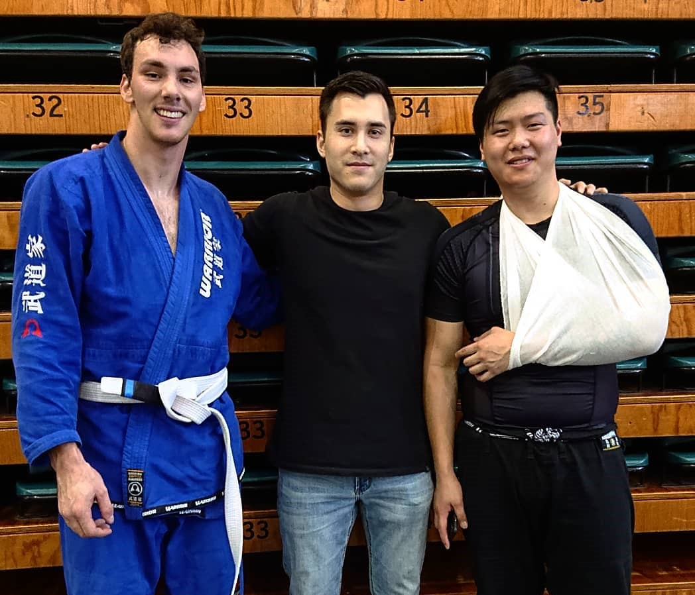

I am originally from Corrigin, a small country town located in Western Australia’s wheatbelt – about 230kms from Perth. I attended both primary and high school in Corrigin until I made the move to attend Guildford Grammar in Perth for year 11 and 12. Moving from a small town to a bigger city didn’t come without its challenges.
I have always been an active child, playing multiple sports and being involved in extracurricular activities. This interest in physical health led me to enrol in a Health Science degree after high school, however I quickly came to the realisation that while I enjoy furthering my knowledge about strength and conditioning, mobility and overall health – I could not see a future as a physiotherapist. I needed a career where there was more variety in the problems I was solving and one where there was more challenge. After taking a brief break from university, I decided to enrol in a Commerce degree as this would allow me to be exposed to problems where I could use creative thinking to come up with practical solutions for the processes and tools used in the financial world.
I appreciate having the time to invest in my hobbies which I find extremely beneficial in improving my personal and professional life. My time learning and competing in Brazilian Jiu Jitsu competitions has helped me to become patient and be more methodological in my thinking. This way of thinking has helped me in my working life to not only fix immediate problems, but to think ahead and look at any potential issues which may arise in the future.
Although my career path has not been completely linear, the knowledge and skills I have picked up along the way have helped me to grow personally, which in turn has helped me in my professional life.
